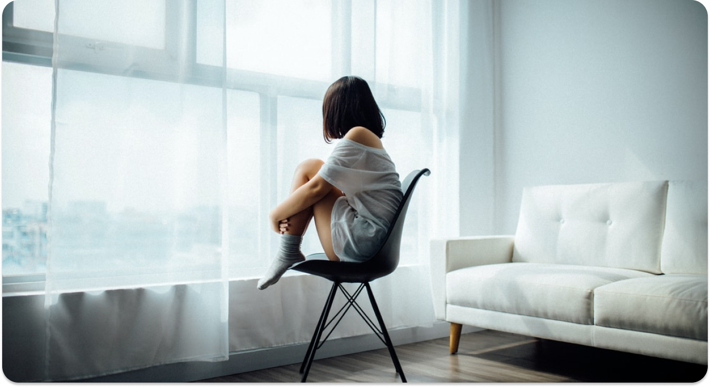

Konsultasi
Edukasi
Eksplorasi
Saling Bantu
Konsultasi
Edukasi
Eksplorasi
Saling Bantu
8 langkah Untuk Menghentikan Pikiran Negatif

Pernahkah kamu tenggelam dalam pikiranmu? Pikiran yang seperti apakah itu? Apakah itu positif, netral, atau negatif? Jika pikiran tersebut adalah pemikiran yang negatif, pernahkah kamu menyadari bagaimana pola pikirmu? Apakah pikiran tersebut terus terulang-ulang dalam benakmu, hal yang dikena dengan istilah rumination?
Pikiran kita seringkali mengalami penderitaan. Ketika kita merenungkannya terus menerus, kita ingin tahu alasannya, apa yang harus dilakukan, dan siapa yang harus disalahkan. Kita baru merasa baik-baik saja jika semua pertanyaan itu terjawab.
Namun, kebiasaan ini membuat kita merasa lebih buruk tentang diri kita sendiri dan membawa kita ke dalam penderitaan dan rasa sakit yang mendalam. Jadi, bagaimana cara memutus siklus pikiran negatif ini?
1. Menuangkan pikiran dalam jurnal
2. Berolahraga
3. Berada di lingkungan dengan orang-orang yang positif
4. Jangan berpikir bahwa kamu adalah korban
5. Membantu seseorang yang membutuhkan
6. Berlatih meditasi
7. Membangun portofolio untuk emosi positif
8. Membuka diri terhadap humor
Jika kamu masih merasa kesulitan untuk mengatasi pola pikir negatif dalam diri dan hal itu memengaruhi hubungan interpersonal dirimu, pekerjaan, keseharianmu, jangan ragu untuk menghubungi seorang profesional dalam kesehatan mental.
Penulis : Zara
Tonton lebih banyak lagi